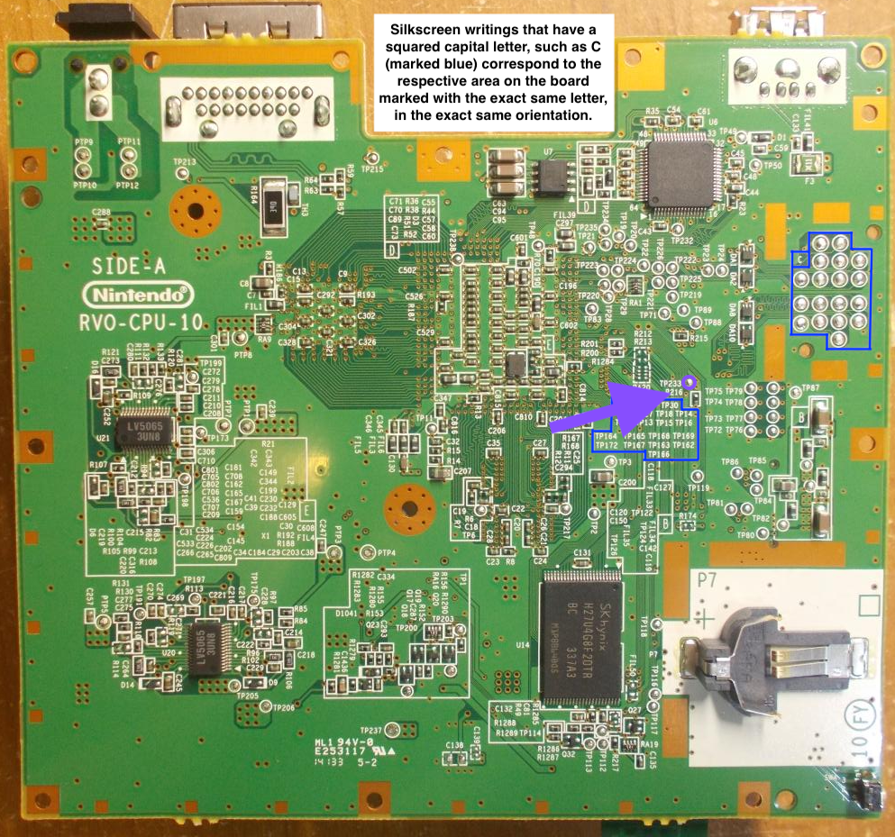
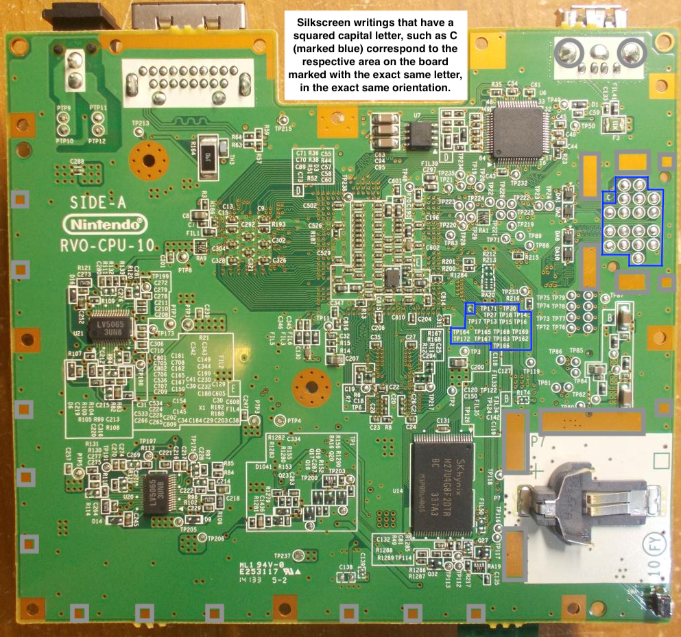

Reset Button
This is the least exciting, but arguably a rather useful mod, especially along with the SD card mod. Don't expect anyone to congratulate you for it, even @άκηςμαύρο can do it. I can assure you you'll need it anyway so here we go.
⚠️ Make sure you have read Info and followed Disassembling the Console before proceeding.
Difficulty: 1/5
Parts required:
- Two pieces of wire, any length will do, better be small (we recommend about 2/3rds the size of @Odyssey346's pp or 32awg) so it doesn't take up space and it's easier to bend into shape.
- One Normally Open push button. Please, don't be like DeadlyFoez, use a button that doesn't short itself by default putting your console to an indefinite loop of re- re- re- resetting.
- Two tablespoons of hope
- A pinch of patience
1. Grab your wii mini board and flip it over to the back side
Done? Wow you must be a bloody genius.
2. Connect the button to the test point

Take your glorified burnstick and use that funny melty metal thing of yours to solder one end of one wire to that point. Then, take the other side of that same wire and solder it to one pin of the button. It shouldn't matter which one if it has two.
If you're a pleb and using surface mount buttons with 4 pins or something else, grab your multimeter in continuity mode and check which of these pins are shorted together and which are only shorted when you press the button. Solder it to any of the pins, but make sure your other wire goes to a pin that only shorts with the first when the button is as depressed as a 13 year-old white TikTok girl.
3. Connect the button to a ground point

Solder one end of the other wire to
any ground point on the board. Some recommended ones are marked below
in grey. If you know how to find a ground point yourself, you can
solder it there. Note that we do not recommend using TP172
in section C as it may be used later for a different mod. Also keep
in mind that some of the ground pads in the perimeter are covered by
the metal shielding of the console so make sure you don't overdo it
with solder or the shield may not close properly.
After adding the reset button
If you aren't planning to continue wasting time on another mod, find a place to mount your reset switch, a popular location is above the USB port or inside the dvd cover. Then, close up your console and boot it up. Try pressing the reset button while in the Wii menu. If the menu reloads, congratulations! You have now added a button! If you have Priiloader installed (which you should if you want any chance of your console surviving some bricks) you can now enter it by holding Reset when the console boots.
Continue to Choosing a Mod to choose another mod!